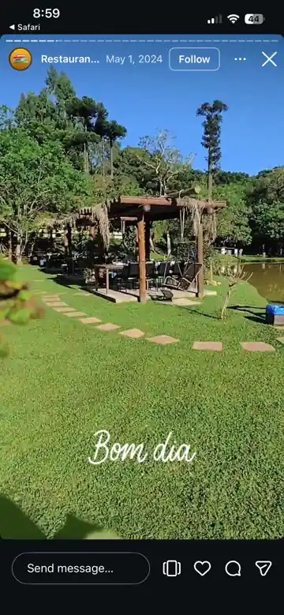
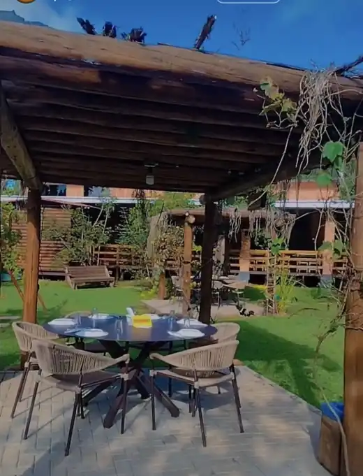
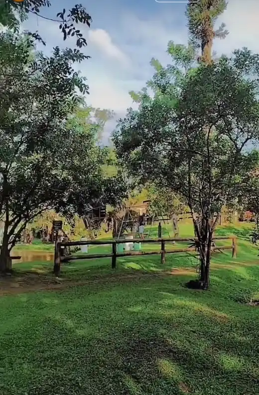
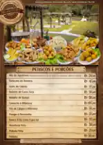

01 · NATUREZA
Seu refúgio em Bateias.
O verde, o lago e o prazer de passar o dia sem pressa.
Gastronomia, natureza e momentos especiais em um só lugar. Venha viver o Melhor Opção.
Imagem de abertura ilustrativa. Fotografias do local na seção “A experiência”.
Em Bateias, o Melhor Opção reúne sabores, gramado, lago e espaços ao ar livre. É o tipo de lugar em que a conversa continua depois da refeição — e a paisagem faz parte da memória.
Uma parada especial para famílias, casais, ciclistas, motociclistas e quem procura uma pausa gostosa na rotina.
Planeje sua visita ↗

O sabor chama. A natureza acolhe. Os bons encontros fazem querer voltar.
O cenário real do Melhor Opção, entre o verde, o lago e espaços preparados para bons encontros.
O verde, o lago e o prazer de passar o dia sem pressa.
Encontros, conversas e tempo de qualidade.

Um passeio com clima de interior.
Fotografias do local enviadas para a apresentação. A qualidade depende das imagens de origem.
Petiscos, porções e aquele almoço que reúne todo mundo.

O melhor da mesa é ter com quem dividir.

Almoço, conversa e um bom motivo para ficar.

Conheça as opções diretamente com o restaurante.

Mais do que comer bem: aproveitar a companhia.
Arraste os cartões ou use as setas. Imagens gastronômicas ilustrativas, exceto a imagem do cardápio fornecida pelo restaurante.
O Chalé das Araucárias é um convite para prolongar a experiência em meio à natureza. Um refúgio para descansar, respirar e aproveitar cada instante.
Imagem de hospedagem ilustrativa. Fotos e condições oficiais disponíveis no Airbnb.
Restaurante e Chácara Melhor Opção
Bateias, Campo Largo — Paraná.
Confirme os horários e o atendimento diretamente nas redes oficiais antes de sair.
Reúna quem você gosta. Escolha o dia. O resto é aproveitar.
Conversar pelo WhatsApp ↗